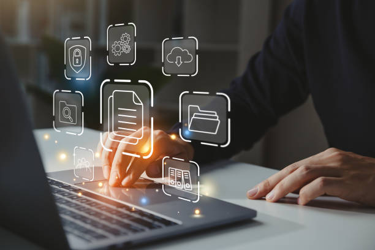

Pengertian Informatika
Informatika merupakan ilmu yang baik mempelajari terkait penggunaan komputer untuk mengatur dan menganalisis data yang berukuran besar, baik data maupun informasi pada mesin berbasis komputasi. Disiplin ilmu ini mencakup beberapa macam bidang, termasuk di dalamnya: sistem informasi, ilmu komputer, ilmu informasi, teknik komputer dan aplikasi informasi dalam sistem informasi manajemen. Secara umum informatika mempelajari struktur, sifat, dan interaksi dari beberapa sistem yang dipakai untuk mengumpulkan data, memproses dan menyimpan hasil pemrosesan data, serta menampilkannya dalam bentuk informasi.
Aspek dari informatika lebih luas dari sekadar sistem informasi berbasis komputer saja, tetapi masih banyak informasi tidak dan belum diproses dengan komputer. Informatika mempunyai konsep dasar, teori, dan perkembangan aplikasi tersendiri. Informatika dapat mendukung dan berkaitan dengan aspek kognitif dan sosial, termasuk tentang pengaruh serta akibat sosial dari teknologi informasi pada umumnya. Penggunaan informasi dalam beberapa macam bidang, seperti bioinformatika, informatika medis, dan informasi yang mendukung ilmu perpustakaan, merupakan beberapa contoh yang lain dari bidang informatika.
Mengapa Penting untuk Belajar Teknik Informatika?
1. Peka terhadap perkembangan teknologi :
Mahasiswa-mahasiswa yang melanjutkan studi di Teknik Informatika bisa dikatakan beruntung. Pasalnya, mereka akan dilatih untuk peka terhadap perkembangan teknologi yang lajunya semakin pesat. Hal ini pun akan membantu mereka mengikuti materi hingga berinovasi mengembangkan teknologi terbaru. Mengikuti tren di bidang teknologi pun tak akan membuat Anda lebih siap saat menghadapi perubahan berskala global.
2. Mengetahui pemrosesan informasi pada komputer:
Anda yang kuliah di jurusan Teknik Informatika mungkin akan terkejut saat memasuki materi seputar pemrosesan komputer. Pasalnya, perangkat ini terdiri atas serangkaian proses rumit. Walau awalnya terasa sulit mengikuti, Anda yang fokus mengikuti pembelajaran akan mendapatkan sejumlah benefit. Misalnya saja mampu menganalisis sebuah sistem yang digunakan dalam perangkat dan merancang sistem baru yang lebih inovatif.
3. Prospek masa depan yang menjanjikan:
Alasan lain yang membuat Teknik Informatika menjadi jurusan populer adalah prospek masa depannya yang menjanjikan. Sekarang, sudah semakin banyak perusahaan besar maupun perintis (startup) yang membutuhkan lulusan dari jurusan tersebut. Belum dapat pekerjaan yang cocok? Anda bisa menjadi freelancer atau pekerja lepas. Penghasilan yang diperoleh pun tak kalah besar dari pegawai yang bekerja di perkantoran.